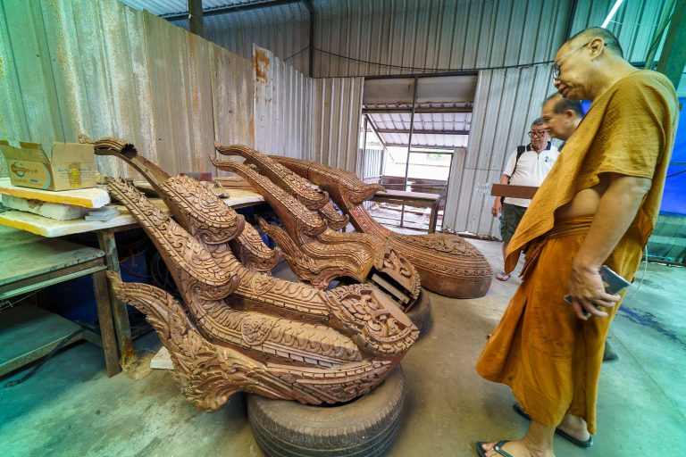

Milestone 1.0
Existing Temple Condition
The redevelopment begins with a careful reading of the existing temple, its devotional routines and the spatial needs of a larger community before the new works are introduced.
